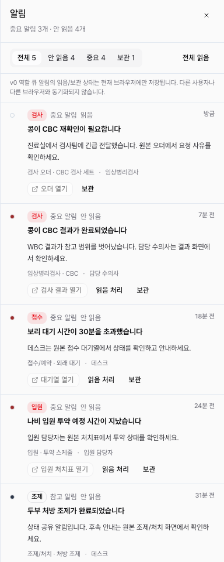

DEN-399 전역 알림 localStorage/disclaimer 완료 보고서
전역 알림 drawer의 읽음/보관 상태를 v0 계약의 local-first 범위에 맞춰 저장하도록 구현했다. 저장 대상은 알림 ID 배열뿐이며, 역할 큐 상태가 현재 브라우저에만 저장된다는 제한을 drawer에 노출했다.
변경
clair.notifications.v0.read와clair.notifications.v0.archive키로 read/archive ID 배열을 저장한다.- AppShell mount 이후 persisted state를 hydrate하고, hydrate 이후 사용자 변경분만 localStorage에 기록한다.
- fixture 변경으로 사라진 unknown ID는 무시하고, malformed/non-array 값은 fixture 기본값으로 복구한다.
- 보관은 목록 정리, 읽음은 확인 상태로만 유지하며 workflow completion이나 audit state로 취급하지 않는다.
- drawer에 역할 큐 read/archive가 다른 사용자나 다른 브라우저와 동기화되지 않는다는 안내를 추가했다.
제외 범위
live push, service worker, provider 발송, Kakao/SMS/email, remote Supabase migration/RLS/live validation, 역할 큐 상태의 client-to-client 동기화는 포함하지 않았다. source deep-link, fallback detail, dirty-state confirmation은 DEN-404/DEN-405에서 다룬다.
검증
npm run lint통과. 기존 경고 4개는 유지된다.npx tsc --noEmit통과.PLAYWRIGHT_BASE_URL=http://127.0.0.1:3109 npx playwright test tests/app-shell.spec.ts -g "global notification"통과.npm run docs:check통과.- Playwright Chromium으로 drawer screenshot smoke를 수행했다.

리뷰 반영
서브에이전트 리뷰에서 지적한 계약 키 유지, ID-only storage, mount 후 hydrate, unknown ID 정규화, 역할 큐 disclaimer 문구, reload persistence 테스트를 모두 반영했다.